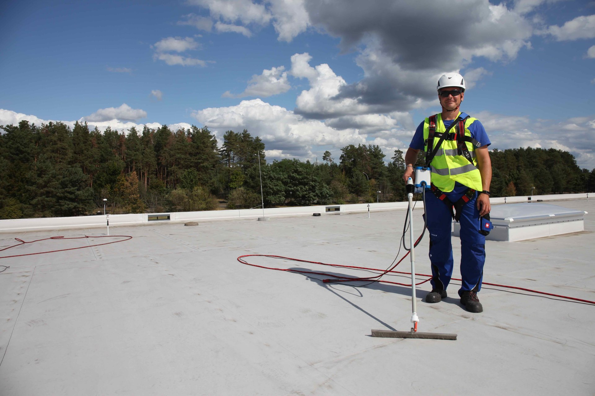
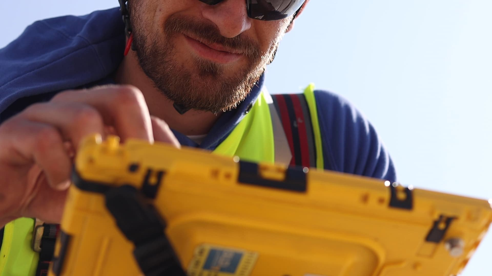
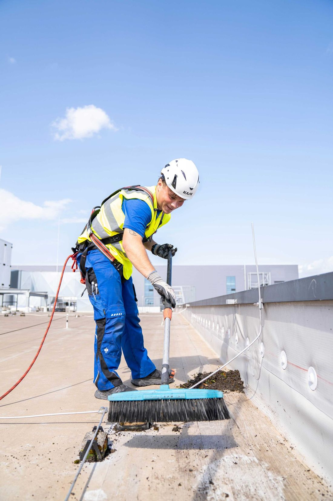

Localización precisa y no destructiva del punto exacto de entrada de agua con tecnología HV-SLD. Sin obras, sin desmontajes.
Solicitar inspección
Sin desmontajes ni obras en la cubierta
Localización exacta del punto de filtración
Fotografías, diagnóstico y recomendaciones
El método HV-SLD (High Voltage Sensor Leak Detection) es la tecnología más avanzada para la detección de fugas en cubiertas planas. Utiliza un campo eléctrico de alta tensión para localizar con precisión milimétrica cualquier punto de discontinuidad en la impermeabilización.
A diferencia de los métodos tradicionales, es completamente no destructivo: no requiere desmontajes, perforaciones ni obras. El técnico recorre la cubierta con el equipo y el sistema identifica exactamente dónde está la fuga.

Tras cada intervención, entregamos un protocolo técnico completo que incluye reportaje fotográfico de todos los puntos inspeccionados, diagnóstico detallado de las patologías detectadas y recomendaciones específicas para su corrección.
Nuestro protocolo de inspección proporciona una evidencia técnica, objetiva y documentada del estado de la cubierta, facilitando la defensa de los intereses del cliente en posibles reclamaciones o incidencias posteriores frente a constructoras, instaladores, fabricantes o compañías aseguradoras.

Analizamos tu caso y te proponemos el servicio más adecuado sin compromiso
Nuestro técnico acude a la cubierta con el equipo HV-SLD certificado
Identificamos con precisión milimétrica todos los puntos de filtración
Entregamos protocolo técnico completo con fotografías, planos y recomendaciones
Presupuesto sin compromiso en menos de 24 horas.